Optimization
| > |
restart; with(LinearAlgebra): with(VectorCalculus): with(student): |
Warning, the names &x, CrossProduct and DotProduct have been rebound
Warning, the assigned names <,> and <|> now have a global binding
Warning, these protected names have been redefined and unprotected: *, +, ., D, Vector, diff, int, limit, series
Warning, the protected name D has had its previous binding removed and has been assigned
In this worksheet we look at finding local and absolute minima and maxima for a function. Often this is called "optimization," because one is looking for a minimum cost or maximum benefit.
About using solve
The downside of using solve to solve equations is that it can find solutions we don't really want. It also uses a potentially confusing syntax for the results.
For instance, here is a system for two variables.
| > |
soln:= solve( { x^3-y=0, y^3-x=0 }, {x,y} ); |
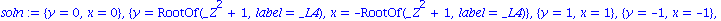
The results are less than crystal clear. To force Maple to say more, use allvalues.
| > |
map( allvalues, {soln} ); |
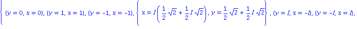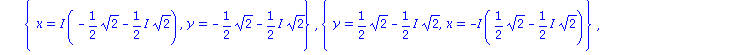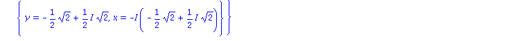
By inspection we can see that many of the alternatives use imaginary numbers (the capital I). This is reasonable from a certain point of view, but in MATH 243 we want only real solutions. In the list above only {x = 0, y = 0}, {x = -1, y = -1}, and {y = 1, x = 1} are purely real. You may have to perform a similar manual "filtering" of solutions when solving optimization problems.
Local min/max
As an example, let us find all local min/max points of
| > |
f:= 1 / (x^2+2*y^2-3*y-1); |
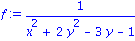
and find the values of f at those points. We first find the partial derivatives.
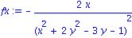
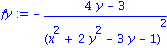
Now we set both to zero and find all critical points.
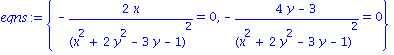
| > |
critpt:= solve( eqns, {x,y} ); |
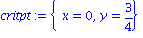
We could boil all this down to one step:
| > |
solve( {diff(f,x),diff(f,y)}, {x,y} ); |
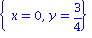
The only critical point is (0,3/4). To determine its character, we need second derivatives.
| > |
fxx:= diff( fx, x ):
fxy:= diff( fx, y ):
fyy:= diff( fy, y ): |
The discriminant is
| > |
disc:= simplify( fxx*fyy - fxy^2 ); |
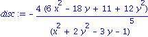
We evaluate at the critical point to find
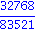
This is positive, so we have found a min or max. We need to check the sign of
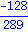
This is negative, so we conclude that (0,3/4) is a local max. A graph is a good way to check.
| > |
plot3d( f, x=-1..1,y=1/4..1, axes=boxed ); |
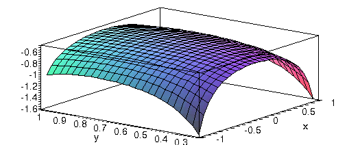
Absolute extrema on bounded domains
When finding global extreme values, you can skip checking second derivatives. However, you must check the boundary as well as interior critical points.
Let's find the min and max of
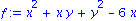
on the rectangle for x between 0 and 5, and y between -3 and 3.
Step 1: Critical points in the interior
| > |
cp:= solve( {diff(f,x),diff(f,y)}, {x,y} ); |
This is interior to the domain, so it represents a possible max/min location.
Step 2: Critical points on the boundary
There are four sides to the boundary. On each of them, f is a function of one variable. We can optimize these expressions quite easily using maximize and minimize from the student package.
West side
This is defined by x=0, so
This is a function of y only. We need to find extreme values of this for y between -3 and 3. We know how to do this from Calc I, but there is a shortcut in the student package.
| > |
minimize( y^2, y=-3..3, location ); |
| > |
maximize( y^2, y=-3..3, location ); |
We see that a min value of 0 is assumed at the middle of the side and a max value of 9 is taken at the ends.
East side
Now we have x=5.
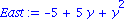
| > |
minimize( East, y=-3..3, location ); |
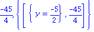
| > |
maximize( East, y=-3..3, location ); |
North side
In this case we set y=3 and let x range between 0 and 5.
| > |
North:= eval( f, y=3 ); |
| > |
minimize( North, x=0..5, location ); |
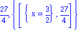
| > |
maximize( North, x=0..5, location ); |
Can you see how copy & paste may be useful!?
South side
| > |
South:= eval( f, y=-3 ); |
| > |
minimize( South, x=0..5, location ); |
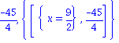
| > |
maximize( South, x=0..5, location ); |
Step 3: Take inventory
We found one interior critical point.
Here are the minimum values on the boundary sides.
| > |
minboundary:= [ 0, -45/4, 27/4, -45/4 ]; |
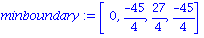
![[0., -11.25000000, 6.750000000, -11.25000000]](images/Optimization_33.gif)
So -12 is the absolute minimum, taken at (4,-2). The candidates for maximum are
| > |
maxboundary:= [ 9, 19, 19, 9]; |
Clearly 19 is the max, taken at (5,3). (We had two copies of this corner point.) A plot helps confirm the results.
| > |
plot3d( f, x=0..5,y=-3..3, axes=boxed, view=-12..19); |
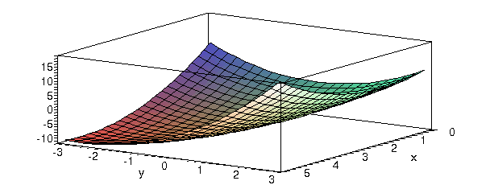
Constrained optimization
Example: Find the point(s) on the surface
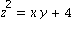
closest to the origin.
It may help to start by plotting the surface:
| > |
plots[implicitplot3d]( z^2=x*y+4, x=-5..5,y=-5..5,z=-5..5, scaling=constrained,axes=boxed); |
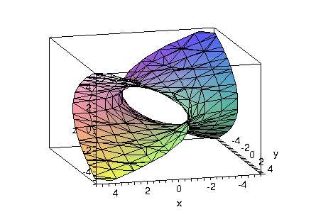
The first and most important step is to identify the objective function (what to minimize) and the constraint. Here, we want to minimize distance to the origin, but that's the same as minimizing the square of the distance. which avoids a nasty square root. So
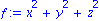
The constraint is given by g=0, where:

First method: Substitution
This is often the easiest, but isn't available in every problem. The constraint gives us a relation among the variables that can eliminate one of them.
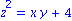
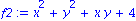
Now we have a function of 2 variables in which the constraint is automatic, so we can treat it as an unconstrained problem.
| > |
cp:= solve( { diff(f2,x), diff(f2,y) }, {x,y} ); |
From the graph it is clear that this point must represent a minimum distance to the origin. (To be thorough we should check second derivatives.) To finish the problem, we see from g that if x and y are both zero, then z is plus or minus 2. So the answer to the problem is "(0,0,2) and (0,0,-2)."
Second method: Lagrange multipliers
Substitution may be messy or impossible, depending on what the constraint looks like. (Taking a square root, for example, means carrying out two cases with positive and negative signs.) Lagrange multipliers are more cumbersome but foolproof.
There is a trick to making Lagrange multipliers convenient in Maple. First define the combined function using a Lagrange multiplier. It's critical here that the constraint be expressed as g=0 and not as g=k for some other constant k.
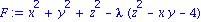
Now we take the gradient as though there are four variables.
| > |
gradF:= Gradient( F, [x,y,z,lambda] ); |
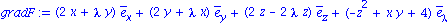
Notice that taking the derivative of F with respect to lambda just returns the constraint function g.
Here are the Lagrange conditions. (equate is a function in the student package.)
| > |
LM:= equate( gradF, <0,0,0,0> ); |
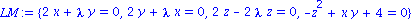
We solve for the 4 unknowns:
| > |
soln:= solve( LM, {x,y,z,lambda} ); |

We use allvalues to expand the roots:
| > |
vals:= map( allvalues, {soln} ); |
There are 4 real solutions in this list. Now we have to try each one in f and pick the smallest. Copy/paste is handy for this.
The minimum values are given by
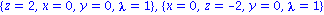
I.e., the solution to the problem are the points (0,0,-2) and (0,0,2).